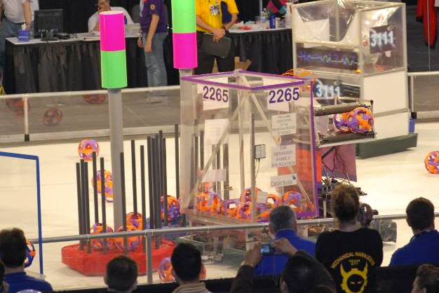
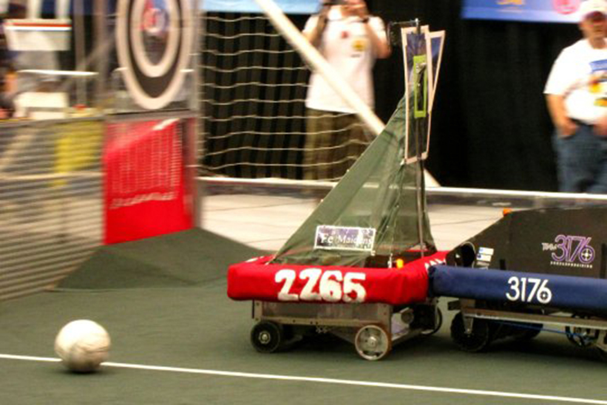
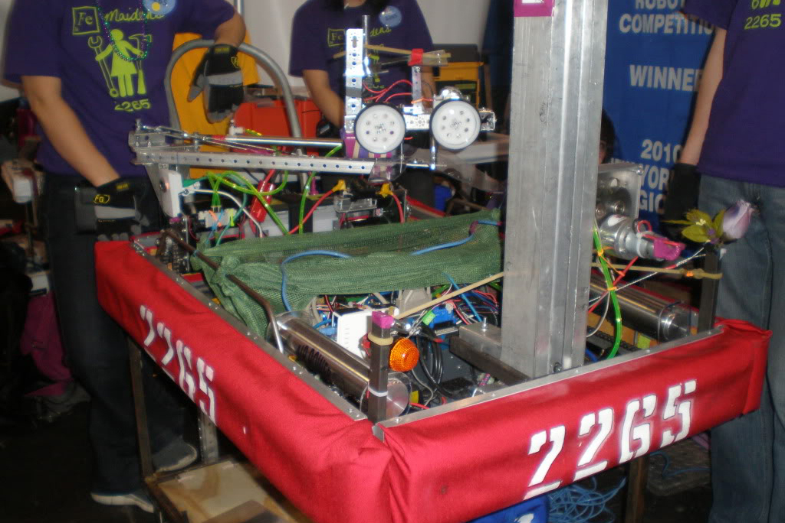
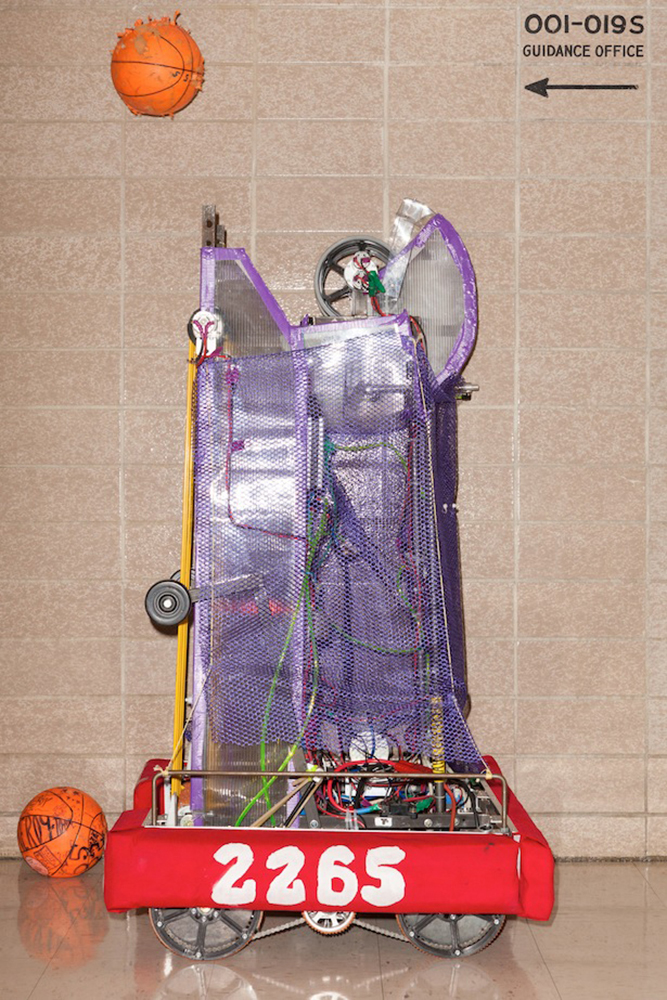

2009 - "Lunacy"
As a freshman I worked mostly the physical construction of our robot, "Robert."
- 
Our 2009 robot, collecting game pieces.
2010 - "Breakaway"
The programming and electronics team graduated the previous year, so as a sophomore I taught myself the basics of electronics and Java, and wired and programmed our robot on my own.
We were NYC Regional Champions based on our robot's performance, and also received the NYC Engineering Inspiration award for our outreach work in K-12 engineering education.
Below is a picture of our 2010 robot, “Kelly the Beckam Gellerman.”
- 
Our 2010 robot (red bumpers) defending the goal from an opposing alliance's robot
2011 - "Logomotion"
As a junior I held the positions of team co-captain and Head of Electronics and Programming. I worked on the programming, electronics, and pneumatics of the robot, in addition to making sure the team was working together as a whole. We were NYC Regional Quarter-Finalists, based on our robots performance.
During this year, two students from Columbia made a documentary about my robotics team called "Drive Like a Girl." You can watch a segment of the documentary here.
Below is a picture of our 2011 robot.
- 
2012 - "Rebound Rumble"
As a senior, I held the position of team captain. I worked on the programming, electronics, and pneumatics of the robot, in addition to making sure the team was working together as a whole. In 2012 our team placed as NYC Regional Semi-Finalists.
Below are some pictures of our 2012 robot, “Hooptimus Prime.”
- 
taking practice shots in the hallway.

balancing on a game obstacle for extra points with one of our alliance partners.